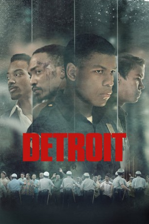

#8637 Detroit
 
 IMDB-Wertung: 7.4 / 10
IMDB-Wertung: 7.4 / 10  Tomatometer: 84
Tomatometer: 84  Metascore: 77
Metascore: 77 
Detroit, 1967: Die schwarze Bevölkerung leidet bereits seit vielen Jahren unter Diskriminierung und sozialer Ungerechtigkeit. An einem hitzigen Sommertag eskaliert der Konflikt schließlich und Straßenschlachten brechen aus – ganze fünf Tage halten die Unruhen an, bei denen Soldaten als Unterstützung der Sicherheitskräfte in die Stadt einrücken. Mitten in diesem unübersichtlichen Geschehen werden eines Abends Schüsse aus dem überwiegend von Schwarzen bewohnten Algiers Motel gemeldet, das daraufhin von Polizei und Militär gestürmt wird. Ein Gast stirbt dabei und die folgenden Ermittlungen eskalieren schnell, als die Polizisten unter Führung des Streifencops Philip Krauss (Will Poulter) beginnen, die Gäste, darunter Sänger Larry (Algee Smith), dessen bester Freund Fred (Jacob Latimore) und Wachmann Melvin Dismukes (John Boyega), in Verhören mit brutalen Mitteln unter Druck zu setzen…
Jahr: 2017
Dauer: 143 Minuten
FSK: 12
Land: USA Studio: Annapurna DistributionTonspuren: DTS - ,
Untertitel: Deutsch,
Auflösung: 1080p (1920x1080) Größe: 12083 MB
Genre: Thriller, Drama, Krimi
Regisseur:  Kathryn Bigelow
Kathryn Bigelow
Drehbuch: Mark Boal
Soundtrack: James Newton Howard
Darsteller:
 Chris Chalk als Officer Frank
Chris Chalk als Officer Frank- Mason Alban als Police Sergeant James
- Bennett Deady als Police Officer Bill
- Michael Jibrin als Vietnam Vet
- Khris Davis als Blind Pig Patron
- Daniel Washington als Blind Pig Bouncer
- Amari Cheatom als Undercover Cop
- Tyler James Williams als Leon
 Laz Alonso als Congressman Conyers
Laz Alonso als Congressman Conyers Will Poulter als Krauss
Will Poulter als Krauss Ben O'Toole als Flynn
Ben O'Toole als Flynn Jack Reynor als Demens
Jack Reynor als Demens Jacob Latimore als Fred
Jacob Latimore als Fred- Barton Bund als Desk Sergeant
- Justin Mane als Police Officer #1
- Dennis Staroselsky als Detective Jones
 Darren Goldstein als Detective Tanchuck
Darren Goldstein als Detective Tanchuck John Boyega als Dismukes
John Boyega als Dismukes Karen Pittman als Dismukes' Mother
Karen Pittman als Dismukes' Mother- Zurin Villanueva als Martha
 Algee Smith als Larry
Algee Smith als Larry- Joseph David-Jones als Morris
- Leon Thomas III als Darryl
- Ephraim Sykes als Jimmy
 Samira Wiley als Vanessa
Samira Wiley als Vanessa- Malcolm David Kelley als Michael
- Nathan Davis Jr. als Aubrey
 Kaitlyn Dever als Karen
Kaitlyn Dever als Karen Hannah Murray als Julie
Hannah Murray als Julie- Eddie Troy als Police Officer Paul
- Austin Hébert als Warrant Officer Roberts
- Joey Lawyer als National Guardsman Mike
- Will Bouvier als National Guardsman Matthew
 Jason Mitchell als Carl
Jason Mitchell als Carl- Morgan Rae als Linda Tucker
- Michael Haase als Dispatcher
 Anthony Mackie als Greene
Anthony Mackie als Greene- Zachary Eisenstat als State Policeman #1
- Jimi Stanton als State Policeman #2
 Bates Wilder als State Police Sergeant
Bates Wilder als State Police Sergeant- David A. Flannery als Police Officer David
 Gbenga Akinnagbe als Aubrey Pollard, Sr.
Gbenga Akinnagbe als Aubrey Pollard, Sr.- Timothy John Smith als Foreman Pete
- Kris Sidberry als Roberta Pollard
- Kelby Turner Akin als Police Officer #2
 Chris Coy als Detective Thomas
Chris Coy als Detective Thomas Glenn Fitzgerald als Homicide Detective Anderson
Glenn Fitzgerald als Homicide Detective Anderson John Krasinski als Attorney Auerbach
John Krasinski als Attorney Auerbach- Henry Frost III als George
- Josh Bartlett als Sound Tech
Datei: X:\2017(A-F)\Detroit (2017, FSK12, 1920x1080).mkv seit 11.04.2018
Festplatte: HD 2017(A-Z)-2018(A-F)
 Es gibt insgesamt 152 Filme in der Gruppe '2017(A-F)'
Es gibt insgesamt 152 Filme in der Gruppe '2017(A-F)'